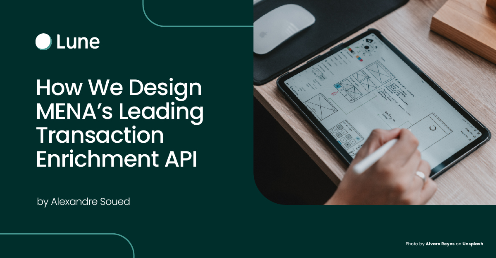

How we design fintech solutions at Lune: Our Philosophy
Alexandre Soued, Co-founder of Lune, talks about the work that goes into designing the leading transaction enrichment API in the Middle East
Published on

Alexandre Soued, Co-founder of Lune, talks about the work that goes into designing the leading transaction enrichment API in the Middle East
Lune came out of a common challenge that most online banking users face, a lack of clarity about the money they've spent in the past month because of messy account statements and no simplified record of transactions. While most banks offer account statements and some sort of transaction overview, they're often confusing and overwhelming. That's why we created Lune: to give you a clear picture of your monthly spending.
We initially began as a money management app that helped people better their finances and save money. We later found that we could have a much larger impact by helping financial institutions in the Middle East improve and understand transactional data. We gathered a team of fintech builders, data scientists, and user experience designers to help with the problem, and started working on the leading transaction enrichment API in our region.
Our approach & philosophy at Lune
Lune is on a mission to enhance the financial lives of everyone. We aim to simplify financial data, empowering people to achieve financial freedom and businesses to give their customers what they need. We do this by providing a powerful transaction enrichment API at the core of our platform.
As a fintech company, we value analytics, problem-solving, and creative thinking. There's a personalized methodology to the way we operate with our partners, Each business need is different, so we treat each one as such. By putting the customer first, our solutions are always tailored on top of what works best for our customers.
A holistic approach to product design
To help financial institutions with transactional data, we need to get deep into understanding users' needs and motivations, challenges and goals. We also need to think about how each feature you build will fit into your bigger product vision. The key here is to work collaboratively, focusing on the customer from all angles, we do that by assigning our product research and UX teams in the early stage of the partnership process all the way to project delivery
Tailored solutions for local & regional markets
When we first started reaching out to fintechs, banks, and financial institutions in the region, we quickly realized that there was a bigger challenge at hand. Most companies were unaware of what transaction enrichment API was or how it could help them.
We've worked in various fintech start-ups and financial advisory firms in the West at places like London, New York and Montreal, but the fintech space is completely different here in the Middle East compared to US or UK markets because of different government regulations and operations, which is why we have partnered up with government entities and built regional teams that understand the know-how of every country.
Diverse, Innovative, and Dedicated
At Lune, we believe that diversity is the key to our success. We think that the best way to create a great product is to have a diverse team, where everyone can share their perspectives, and the product reflects all of those different backgrounds. We're creating an environment that allows our employees to be a part of something big, where their voices are listened to and their opinions are heard
Join our team at Lune
We're all about simple, effective and sustainable fintech solutions to make a difference in people's lives. We believe that there is excess potential and possibilities that must be explored and uncovered in the fragmented financial world. And you can be a part of our team, building game-changing FinTech solutions that could change the way the world uses money.
We're always looking for talent from all areas of the world. If you think you might be a good fit for our team, we want to hear from you. Click here to get in touch, we're excited to hear what you have in mind!